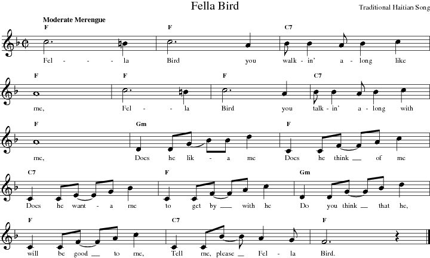

suivant: Un exemple plus complexe monter: Tutorial précédent: Installation
| Partition pour une chanson populaire |
|  |
Ce type de partition est un conducteur. Il vous montre la mélodie, les paroles et les accords sur un męme document.
Pour notre premier fichier MIDI d'accompagnement, nous avons créé le fichier *.mma suivant:
// Sample tutorial file
// Fella Bird, try 1
Tempo 120
Groove Rhumba
1 F
2 F
3 C7
4 F
5 F
6 F
7 C7
8 F
9 Gm
10 F
11 C7
12 F
13 Gm
14 F
15 C7
16 F / / z!
Aprčs les 2 lignes de commentaires au début du fichier, la premičre ligne ŕ noter est:
| Tempo 120 |
Elle donne le tempo (ou vitesse) du morceau ; ici, 120 pulsations par minute. Parfois, vous aurez ŕ le deviner s'il n'est pas indiqué sur votre partition. Pour les morceaux lents, vous pourrez commencer avec un tempo ŕ 80; pour les plus rapides, comme les swings, essayez autour 150 ; les polkas et les marches, qui sont souvent en 2/2, peuvent exiger des tempos beaucoup plus rapides, comme 250. N'hésitez pas ŕ modifier le réglage du tempo dans les exemples proposés... vous ne casserez rien !
Puisque nous utilisons la bibliothčque standard qui a été livré MMA , nous pouvons sélectionner l'un des grooves prédéfinis:
| Groove Rhumba |
Notez que cette commande met également en place la battue en 4/4. Ce n'est pas tout ŕ fait la męme battue que sur la partition, mais elle assez proche. Et en parlant d'assez proche, nous utilisons un rythme rumba au lieu du merengue indiqué.
Enfin, nous avons la partie relative aux accords. La mesure 1 (dans la partition) indique un accord de Fa. C'est ce que nous demandons ŕ MMA :
| 1 F |
Nous continuons de la męme maničre pour le reste du morceau.
Nous l'avons un peu simplifié afin de n'avoir qu'un accord par mesure. MMA remplit automatiquement les mesures de telle sorte que chacune dispose de quatre accords. Nous aurions pu saisir la mesure 2 ainsi:
| 2 F F F F |
ou plus simplement:
| 2 F / / / |
... pour un résultat identique. Mais qui voudrait se fatiguer ŕ saisir tout cela ?
Le dernier temps de la derničre mesure est un silence.
La ligne:
| 16 F / / z! |
signifie que l'accord de Fa est utilisé sur les trois premiers temps, et que le 4čme est totalement silencieux en raison du z!. Notez la différence entre z et z! : alors que les z ne laissent entendre que la piste Drum (batterie), les z! rendent tous les instruments silencieux. Voir le Manuel de Référence pour plus de détails sur les z.
Nous allons maintenant créer notre premier fichier MIDI ! si vous utilisez la distribution standard, vous devriez trouver le fichier fella1.mma dans le dossier de ce tutoriel. Placez-vous dans ce dossier ŕ l'aide l'invite de commande, et saisissez :
| mma fella1 |
Votre ordinateur doit exécuter le script python appelé mma.py pour traiter le fichier fella1.mma. Un fichier MIDI fella1.mid devrait ętre créé. Si ce n'est pas le cas, veuillez vérifier que Python est correctement installé, et assurez-vous que mma.py est bien ŕ l'endroit oů votre shell pourra le trouver. Si vous ętes complčtement bloqués, envoyez-moi un e-mail.
Maintenant, utilisez votre lecteur MIDI préréfé pour lire le morceau...
... quelques accords de piano, une ligne de basse jazzy, un peu de batterie... et voilŕ le travail !
En écoutant le fichier MIDI créé dans la section précédente, vous relčverez certaines lacunes :
L'exemple suivant présente un certain nombre d'améliorations:
// Sample tutorial file
// Fella Bird, try 2
Tempo 120
Groove Metronome2-4
z * 2
Groove Rhumba
Repeat
Volume mp
Cresc mf 4
1 F
2 F
3 C7
4 F
5 F
6 F
7 C7
8 F
9 Gm
10 F
11 C7
Decresc p 4
12 F
13 Gm
14 F
15 C7
RepeatEnding
16 F / / z
RepeatEnd
17 F / / z!
cut -1
Réexécutez MMA et écoutez ŕ nouveau. C'est quand-męme mieux ! non ?
Jetons-un œil sur les changements apportés.
| Groove Metronome2-4 |
Ceci applique le groove en cours ŕ un métronome : c'est le clic. Pour le trouver, MMA traite automatiquement le fichier metronome de la bibliothčque.
Le clic du métronome se compose de coups de wood-blocks dans une structure en 4/4. Pour l'entendre, nous avons créé une mesure vide :
| z * 2 |
Rappelez-vous, nous aurions pu saisir un accord ici, et obtenu le męme résultat puisque (le clic n'est défini pour aucun instrument excepté le wood-block; aucun autre son ne serait audible). Mais, il semble plus approprié de saisir un z.
Bon, d'accord, nous vous avons menti. Nous n'avons effectivement pas créé une mesure vide pour le métronome. Si vous avez bien suivi, vous avez remarqué que le z est suivie par * 2. Cela signifie que cette mesure sera jouée 2 fois. Ainsi, vous obtenez 2 mesures de clic ; ça aide !
Nous n'avons rien changé aux accords, mais quelques modifications peuvent améliorer ce simple morceau. Vous vous souvenez du volume identique durant tout le morceau ? eh bien, jetez un œil ŕ cette nouvelle version. Le morceau commence ŕ un volume modéré et augmente en plusieurs étapes. Et, ŕ la fin, un decresc le réduit pour qu'il soit plus calme lors des 4 derničres mesures.
Veuillez consulter le Manuel de Référence pour plus de détails sur les commandes du volume.
Nous avons légčrement modifié les accords entre les mesures 16 et 17. Dans la premičre, nous avons un z, dans la seconde un z!. La différence entre les deux est que nous voulons que la piste des percussions continue jusqu'ŕ la fin de la mesure 16, mais pas sur le dernier temps de la mesure 17.
Enfin, pour assurer une fin nette dans la derničre mesure, nous avons ajouté une commande cut. Nous sommes sűrs que vous trouverez une grande amélioration bien que ces changements soient mineurs.
bob 2010-12-31